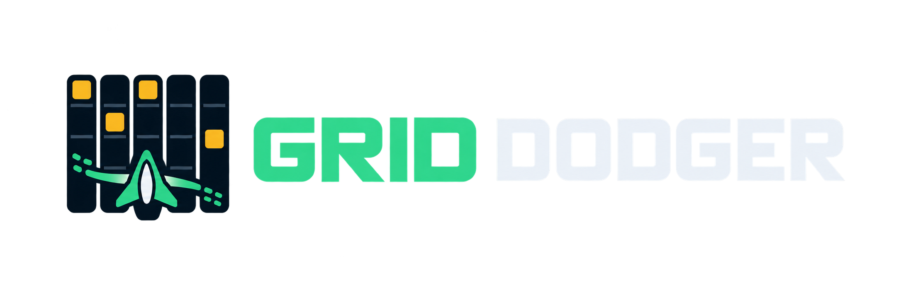
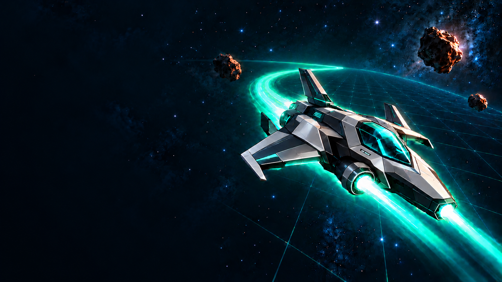
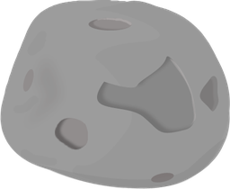
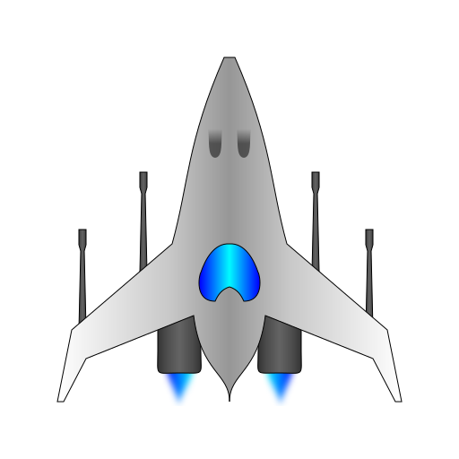

01
Human
Trust your instincts.
You steer. Read the falling hazards, choose a lane, and see how far you can go.
YOU FLY


A SMALL MODEL. EVERY MOVE MATTERS.
One grid. Falling hazards. A choice that matters.
Watch Strands Decider 2B choose its next move.
Then explore how we built it.
80-second recorded walkthrough
MEET THE MODEL
Strands Decider 2B is a small, open-source decision model from AWS, optimized for fast experimentation, local development, and innovation. Give it context, a question, and a set of options. It returns a choice, yes/no answer, or score.
In Grid Dodger, it chooses left, stay, or right. The game executes the move, and Amazon Bedrock writes the end-of-run recap.
01 / THE EXPERIMENT
Most AI demos ask you to read an answer.
This one lets you watch a decision play out.
Trust your instincts.
You steer. Read the falling hazards, choose a lane, and see how far you can go.
Hand over the controls.
The model chooses left, stay, or right. A registered movement tool executes the choice.
Keep the final say.
Decider suggests the next move before you act. Follow its lead—or follow your gut.
Five lanes. One goal: 500 points.
Difficulty starts rising at 100. Every move advances the game.
02 / INSIDE THE AGENT
Strands Decider 2B is a small decision model.
Give it a question and a fixed set of options.
It chooses; your application acts.


LEFT · STAY · RIGHT
01 / GROUNDED CONTEXT
The engine describes the board and calculates each move’s immediate outcome. Decider receives explicit facts, not an image to guess from.
// a bounded question, three registered tools
question: "Which move is safest?"
options: ["left", "stay", "right"]
selected: "right"
tool: move_right()Decider selects. Deterministic code dispatches the tool.
Amazon Bedrock narrates the finished run.
03 / WHAT WE LEARNED
The useful finding wasn’t a bigger model.
It was a clearer question, grounded in the game.
Original vs. grounded prompt,
on 31 avoidable snapshot cases.
Grounded prompt, 40 snapshots.
Includes HTTP and network time.
Grounded prompt, five seeded runs.
Episodes capped at 60 moves.
40 fixed snapshots · 5 seeded runs per variant · 60-move cap
| Variant | Avoidable collisions ↓ | Mean survival moves ↑ | Reached 60 moves ↑ | Median latency ↓ | p95 latency ↓ | Errors |
|---|---|---|---|---|---|---|
| HeuristicLocal rule-based baseline | 0 / 31 | 44.8 | 2 / 5 | 0.02 ms | 0.10 ms | 0 |
| Original promptDecider · reconstructed earlier question | 17 / 31 | 24.2 | 0 / 5 | 354.66 ms | 384.74 ms | 0 |
| Grounded promptDecider · explicit move outcomes | 0 / 31 | 51.0 | 4 / 5 | 422.06 ms | 519.09 ms | 0 |
Lower collisions and latency are better; higher survival is better. p95 is the time at or below which 95% of snapshot requests finished. Runs reaching 60 moves were stopped at the test limit.
What it means: Explicit move outcomes helped Decider avoid immediate mistakes and survive longer in this small test, with a higher median request time. The rule-based baseline also avoided every avoidable snapshot collision and was much faster.
Read the benchmark and its limits (opens in a new tab)04 / WATCH THE DECISIONS PLAY OUT
See the board. Watch the choice.
Follow the move that happens next.

This is a real Decider run.
See Human, Decider, and Shadow modes in the video.
Recorded Human, Decider, and Shadow gameplay with a real Amazon Bedrock recap.
Build it yourselfWHAT TO WATCH FOR
01The board gives the model grounded move outcomes.
02The choice selects left, stay, or right.
03The tool turns that choice into a move.
05 / BUILD IT YOURSELF
Run Grid Dodger with real Strands Decider 2B on your own computer, or deploy it in your AWS account. Local movement decisions need no AWS hosting; speed depends on your hardware. Bedrock recaps are optional and use paid AWS model calls.
A small model. Every move matters.
Strands Decider 2B is a small, open-source decision model from AWS.